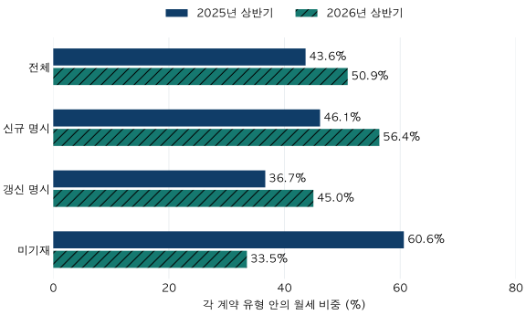

전세와 월세 · 서울 계약 구성
서울 아파트 월세 비중, 절반을 넘었다는 말의 분모는?
서울 아파트 월세 계약 비중을 2022~2025년과 2025·2026년 상반기로 비교합니다. 신규·갱신·미기재의 분모를 확인하고 계약 비중과 가구·매물·임대료를 구분합니다.
분석 기간 · 2022~2025년 · 2025·2026년 상반기 계약 | 보유 자료 스냅샷 생성 · 2026-10-04
“서울 아파트도 월세가 절반을 넘었다.” 이런 문장을 보면 전세로 살던 집이 그만큼 월세로 바뀌었다고 느끼기 쉽습니다. 보유 자료에서 다시 센 2026년 상반기 서울 아파트 월세 계약 비중은 50.9%였습니다. 하지만 이 숫자는 그 기간에 관측된 전월세 계약의 구성입니다. 서울 임차 가구의 절반이 월세로 산다는 뜻은 아닙니다.
월세를 조금이라도 내는 계약은 모두 월세에 포함했습니다
대상은 서울 25개 구, 전체 전용면적의 아파트 전월세 계약입니다. 보증금이 양수이고 월 납부액이 0이면 전세, 보증금이 0 이상이고 월 납부액이 양수이면 월세로 셌습니다. 보증금이 큰 보증부월세나 흔히 반전세라고 부르는 계약도 월 납부액이 있으면 월세에 포함됩니다. 이 글에서 반전세의 보편적인 금액 경계를 따로 정하지는 않았습니다.
월세 계약 비중 = 월 납부액이 있는 계약 건수 ÷ (전세 계약 건수 + 월세 계약 건수) × 100. 계약 한 건에 한 표를 줍니다. 집의 면적, 보증금 크기, 단지 세대수로 가중하지 않습니다. 임대료 중 월세가 차지하는 금액 비율도 아닙니다.
국토부 아파트 전월세 자료는 신고 자료와 확정일자 자료를 바탕으로 계약년월별 정보를 제공합니다. 이 글은 이를 정제한 계약을 다시 집계했습니다. 금액·면적이 유효하지 않거나 토지임대부인 계약, 신규·갱신 관련 정보가 서로 충돌하는 계약은 제외하는 규칙을 적용했습니다. 이번 서울 기간 표본의 실제 제외 사유는 신규·갱신 관련 분류 충돌이었습니다.
2022~2025년에는 일직선으로 늘지 않았습니다
| 기간 | 전세 | 월세 | 분모 | 월세 비중 | 제외 |
|---|---|---|---|---|---|
| 2022년 | 129,352 | 104,029 | 233,381 | 44.6% | 339 |
| 2023년 | 147,723 | 107,933 | 255,656 | 42.2% | 468 |
| 2024년 | 130,855 | 100,495 | 231,350 | 43.4% | 909 |
| 2025년 | 138,495 | 112,444 | 250,939 | 44.8% | 1,027 |
| 2025년 상반기 | 72,762 | 56,337 | 129,099 | 43.6% | 647 |
| 2026년 상반기 | 56,521 | 58,650 | 115,171 | 50.9% | 308 |
연간 비중은 2022년 44.6%, 2023년 42.2%, 2024년 43.4%, 2025년 44.8%였습니다. 이 네 해만 보면 2023년에 낮아졌다가 다시 높아졌습니다. 시작과 끝만 연결해 매년 같은 속도로 월세가 늘었다고 설명하면 중간의 변화가 사라집니다.
2026년은 보유 자료에 완결 연도가 없으므로 연간 표에 섞지 않았습니다. 대신 2025년 1~6월과 2026년 1~6월을 비교했습니다. 월세는 56,337건에서 58,650건으로 늘고, 전세는 72,762건에서 56,521건으로 줄었습니다. 분모 전체는 129,099건에서 115,171건으로 감소했습니다. 비중 상승에는 월세 건수 증가와 전세 건수 감소가 함께 들어 있습니다.
상반기끼리 맞추면 서로 다른 계절을 비교하는 문제는 줄어듭니다. 그러나 신고 반영 정도, 거래되는 집의 면적·지역 구성, 정책과 시장 상황까지 같아지는 것은 아닙니다. 2026년 상반기도 앞으로 정정·추가될 수 있는 현재 보유 자료의 집계입니다.
새로 계약하는 사람과 갱신하는 사람의 비중은 다릅니다

| 기간 · 유형 | 유형 건수 | 그중 월세 | 유형 안 월세 비중 | 전체 중 유형 몫 |
|---|---|---|---|---|
| 2025년 상반기 · 신규 명시 | 70,158 | 32,373 | 46.1% | 54.3% |
| 2025년 상반기 · 갱신 명시 | 49,130 | 18,015 | 36.7% | 38.1% |
| 2025년 상반기 · 미기재 | 9,811 | 5,949 | 60.6% | 7.6% |
| 2026년 상반기 · 신규 명시 | 61,148 | 34,486 | 56.4% | 53.1% |
| 2026년 상반기 · 갱신 명시 | 52,781 | 23,748 | 45.0% | 45.8% |
| 2026년 상반기 · 미기재 | 1,242 | 416 | 33.5% | 1.1% |
‘신규 명시’는 신규라고 적힌 계약만 셌고, ‘갱신 명시’는 갱신이라고 적힌 계약을 모았습니다. 갱신요구권 사용이 적히지 않았다고 해서 미사용으로 단정하지 않았습니다. 신규·갱신 여부가 비어 있으면 ‘미기재’로 남겼습니다. 빈칸을 신규로 바꾸면 신규 계약의 건수와 비중이 달라집니다.
두 상반기 모두 신규로 명시된 계약의 월세 비중이 갱신보다 높았습니다. 신규·갱신 각각에서도 2026년 비중이 높아졌으므로, 전체 상승을 단순히 신규 계약의 몫이 커진 결과로만 설명할 수는 없습니다. 다만 유형 내부의 단지·면적·보증금 구성은 고정하지 않았습니다.
구성의 영향을 숫자로도 확인해 보겠습니다. 신규·갱신·미기재의 몫을 2025년 상반기 그대로 두고 2026년 상반기의 유형별 월세 비중만 적용하면 전체 비중은 약 50.3%입니다. 실제 50.9%와의 차이는 0.6%포인트로, 같은 기간 상승폭 7.3%포인트의 대부분은 유형 구성이 아니라 각 유형 안의 변화와 함께 나타났습니다. 미기재 계약을 빼고 신규·갱신이 명시된 계약만 보아도 월세 비중은 42.2%에서 51.1%로 높아집니다. 기재 범위가 달라진 미기재 그룹 때문에 생긴 착시만은 아니라는 뜻입니다.
특히 미기재는 9,811건에서 1,242건으로 줄었습니다. 각 기간 전체의 7.6%와 1.1%입니다. 미기재 그룹 안의 월세 비중도 60.6%와 33.5%로 달랐습니다. 같은 집을 따라간 자료가 아니므로, 미기재 감소분을 신규나 갱신으로 옮겨 적힌 동일 계약이라고 연결할 수 없습니다. 신고 내용의 기재 범위가 달라졌을 가능성과 실제 계약 구성의 변화를 분리해 읽어야 합니다.
월세가 늘었으니 전세 매물이 그만큼 사라진 것 아닐까요?
이 집계에서 관측된 전세 계약 건수는 줄었습니다. 그 사실은 남습니다. 다만 계약 건수 감소를 현재 시장에 나온 전세 매물 감소량으로 바꾸려면 별도의 매물 재고 자료가 필요합니다. 갱신 계약은 새로 구할 수 있는 매물과 다르고, 한 집이나 한 가구가 분석 기간 동안 여러 계약에 등장할 수도 있습니다.
국토부 전월세 FAQ는 모든 계약이 자료에 잡히지 않을 수 있다고 설명하며, 신고 자료에서 신규·갱신 등의 정보를 추가 제공한다고 안내합니다. 이 자료는 임차 가구 전수조사도, 동일 주택의 전세→월세 전환 이력도 아닙니다. 공개 API에 동·호 정보도 없어 각 계약을 같은 집의 연속 기록으로 간단히 연결할 수 없습니다.
비중이 높아졌으면 월세도 비싸졌을까요?
건수 비중만으로는 알 수 없습니다. 예를 들어 보증금을 낮추고 월 납부액을 높인 계약과, 보증금은 그대로인데 월 납부액이 오른 계약은 다릅니다. 월세 가격을 비교하려면 한 계약의 보증금과 월 납부액을 한 쌍으로 놓고 주택 조건·계약 시점까지 맞춰야 합니다. 이 글은 월세 수준이나 전월세 전환율을 추정하지 않았습니다. 직접 받은 두 조건은 보증금·월세 비교 글과 계산기에서 비교할 수 있습니다.
금리나 정책 때문에 바뀌었다고 볼 수 있을까요?
가능한 설명을 떠올릴 수는 있지만 이 표로 효과를 검증한 것은 아닙니다. 금융비용, 임대인의 조건 제시, 임차인의 보증금 마련 여력, 지역·주택 구성과 신고 범위가 함께 달라질 수 있습니다. 네 연도와 두 상반기의 관측 차이를 특정 정책의 효과나 다음 해 전망으로 바꾸지 않았습니다.
기사와 내 후보 계약은 이렇게 나누어 확인하세요
- 분모를 확인합니다. 서울 아파트인지, 전국 모든 주택인지, 신규만인지, 갱신까지 포함하는지 봅니다.
- 기간을 맞춥니다. 연간과 상반기를 직접 비교하기보다 전년 같은 기간을 봅니다. 계약월과 자료 확인 시점도 함께 기록합니다.
- 미기재와 제외를 확인합니다. 신규·갱신이 빈칸인 계약을 어디에 넣었는지, 충돌 자료를 어떻게 처리했는지 봅니다.
- 내 후보는 보증금·월세를 함께 적습니다. 같은 지역·면적의 현재 제시 조건을 비교합니다. 전체 월세 비중이 높다는 이유만으로 특정 후보의 월 납부액이 적정하다고 판단하지 않습니다.
이 자료에서 2026년 상반기 월세 계약은 전월세의 절반을 조금 넘었고, 신규·갱신으로 나누어도 전년 같은 기간보다 비중이 높았습니다. 이 결과가 답하는 질문은 “관측된 계약이 어떻게 구성됐는가”입니다. 실제 가구의 주거 형태, 전세 매물의 수, 내 계약의 적정 임대료는 각각 다른 근거가 필요합니다.
분류 규칙·검증 범위와 연도별 신규/갱신 집계
국토부 아파트 전월세 자료를 정제한 계약 1,089,548건(서울로 연결된 2022.1~2026.6)을 점검했습니다. 신규·갱신 관련 분류 충돌 3,051건을 제외한 1,086,497건이 해당 기간의 분석 대상입니다. 같은 계약을 합치는 정제 규칙을 적용했으며, 가구 수나 고유 주택 수와 같지 않습니다. 서울 여부는 연결된 아파트 마스터 지리 기준이므로 지역 미연결 자료를 서울로 추정하지 않았습니다.
보증금·월세가 음수·비유한값이거나 전용면적·면적 유형이 무효인 계약, 토지임대부, 보증금과 월세가 모두 0인 계약을 제외하는 기존 규칙을 적용했습니다. 분류 충돌은 신규/갱신·갱신요구권 필드의 상충, 알 수 없는 값, 신규인데 요구권 사용으로 적힌 경우 등을 포함합니다. 임대차의 해제 여부를 별도로 복원하거나 해제 건수를 가정하지 않았습니다.
원천 파일은 서울 25개 구 × 54개월의 1,350개가 존재하고, 모든 분석 월에 관측 계약이 있음을 확인했습니다. 이는 파일 범위 확인이며 모든 실제 계약이 포착됐다는 보증은 아닙니다. 현행 정제 규칙의 SQL 집계와 별도 Python 분류의 월·유형·전세/월세·제외 집계가 일치했습니다. 모형 추정치나 과거 임대 마트의 집계를 가져오지 않았습니다.
스냅샷 생성일 2026-10-04, 참조 종료월 2026-09. 최근 분기의 불완전성을 줄이기 위해 비교는 6월에서 끝냈습니다. 과거 시점에 이용 가능했던 자료의 빈티지를 재현한 것은 아닙니다. 공개 셀은 최소 10건, 비중 분모는 30건 이상입니다. 겹치는 연간·상반기 표의 차이로 얻는 하반기 셀도 공개 기준을 확인했습니다. 단지·개별 계약 식별자는 내보내지 않습니다.
| 기간 · 유형 | 유형 건수 | 그중 월세 | 유형 안 월세 비중 | 전체 중 유형 몫 |
|---|---|---|---|---|
| 2022년 · 신규 명시 | 115,469 | 59,056 | 51.1% | 49.5% |
| 2022년 · 갱신 명시 | 84,108 | 26,148 | 31.1% | 36.0% |
| 2022년 · 미기재 | 33,804 | 18,825 | 55.7% | 14.5% |
| 2023년 · 신규 명시 | 160,414 | 69,257 | 43.2% | 62.7% |
| 2023년 · 갱신 명시 | 66,354 | 22,059 | 33.2% | 26.0% |
| 2023년 · 미기재 | 28,888 | 16,617 | 57.5% | 11.3% |
| 2024년 · 신규 명시 | 153,278 | 70,015 | 45.7% | 66.3% |
| 2024년 · 갱신 명시 | 72,433 | 28,179 | 38.9% | 31.3% |
| 2024년 · 미기재 | 5,639 | 2,301 | 40.8% | 2.4% |
| 2025년 · 신규 명시 | 136,418 | 65,481 | 48.0% | 54.4% |
| 2025년 · 갱신 명시 | 98,499 | 36,907 | 37.5% | 39.3% |
| 2025년 · 미기재 | 16,022 | 10,056 | 62.8% | 6.4% |
| 2025년 상반기 · 신규 명시 | 70,158 | 32,373 | 46.1% | 54.3% |
| 2025년 상반기 · 갱신 명시 | 49,130 | 18,015 | 36.7% | 38.1% |
| 2025년 상반기 · 미기재 | 9,811 | 5,949 | 60.6% | 7.6% |
| 2026년 상반기 · 신규 명시 | 61,148 | 34,486 | 56.4% | 53.1% |
| 2026년 상반기 · 갱신 명시 | 52,781 | 23,748 | 45.0% | 45.8% |
| 2026년 상반기 · 미기재 | 1,242 | 416 | 33.5% | 1.1% |
공개 집계 JSON의 정수 건수로 비중을 계산하고 소수 첫째 자리로 표시했습니다. 분석·집필: 파파펭귄 (Nobot Kang). 에이전트로 근거 대조·계산·초안 검토를 보조했습니다. 공식 출처 확인일: 2026-10-09.